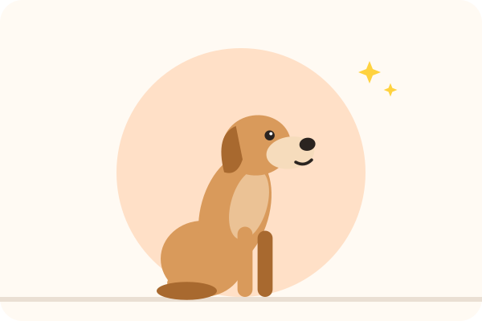

Quelle pochette à friandises choisir ? Le comparatif
En éducation, tout se joue en une seconde : la récompense doit arriver pendant que votre chien fait ce que vous voulez. Fouiller dans une poche ou un sachet, c'est souvent trop tard. Une pochette à friandises bien choisie change tout. Voici les différents types et leurs avantages.
Les critères de choix
- L'ouverture d'une main : c'est le critère essentiel. Vous tenez souvent la laisse de l'autre main. Les systèmes à ouverture rigide ou aimantée restent ouverts pendant l'exercice et se referment d'un geste.
- La fermeture : quand vous vous penchez ou courez, les friandises ne doivent pas tomber. Sinon, votre chien apprend surtout à regarder vos pieds.
- Le lavage : les friandises laissent du gras et des odeurs. Une doublure amovible ou un modèle en silicone se nettoie beaucoup plus facilement.
- La fixation : clip sur la ceinture ou la poche, ceinture réglable, ou mousqueton. Vérifiez qu'elle tient bien quand vous bougez.
- Les poches en plus : pour les sacs à crottes, le clicker, les clés, le téléphone.
Le comparatif des 5 types de pochettes
| Type | Points forts | Limites | Pour qui ? |
|---|---|---|---|
| Pochette à clip ou ceinture | Simple, ouverture rapide, compacte | Peu de place pour le reste | La plupart des maîtres |
| Sac banane d'éducation | Beaucoup de rangement, bien maintenu | Plus encombrant | Les longues balades, les cours |
| Pochette en silicone | Se lave en un instant, ne garde pas les odeurs | Petite contenance | Les friandises molles ou humides |
| Pochette avec distributeur de sacs | Tout au même endroit | Un peu plus lourde | Les balades en ville |
| Gilet d'éducation | Nombreuses poches, mains libres | Cher et peu discret | Les passionnés, le sport canin |
1. La pochette à clip ou à ceinture
Le modèle le plus courant : une petite poche à ouverture rigide qui s'accroche à la ceinture ou à la poche du pantalon. Elle s'ouvre d'une pression et reste ouverte pendant la séance. Idéale pour les exercices à la maison et les balades courtes.
Choisissez-la avec une ouverture qui se referme seule et une doublure lavable.
2. Le sac banane d'éducation
Porté à la taille ou en bandoulière, il combine une grande poche à friandises et plusieurs compartiments pour vos affaires. Pratique pour les longues balades ou les cours d'éducation, quand vous voulez tout avoir sur vous sans sac à dos.
Vérifiez que la poche à friandises est séparée de vos affaires.
3. La pochette en silicone
Souple, elle s'ouvre en appuyant sur les côtés et se referme toute seule. Elle passe sous l'eau ou au lave-vaisselle selon les modèles, et ne garde pas les odeurs. Parfaite pour les friandises molles ou les petits morceaux de poulet, qui salissent les pochettes en tissu.
Facile à laver : idéale pour les friandises humides.
4. La pochette avec distributeur de sacs
Une pochette à friandises classique, avec un rouleau de sacs à crottes intégré. Vous avez tout au même endroit, et vous n'oubliez plus les sacs. Un bon choix pour les balades quotidiennes en ville.
Vérifiez que la poche à friandises reste facile à ouvrir d'une main.
5. Le gilet d'éducation
Utilisé par les éducateurs et dans certains sports canins, il offre de nombreuses poches et laisse les mains totalement libres. C'est un équipement plus cher, utile si vous faites beaucoup de séances ou d'activités avec votre chien. Pour un usage courant, une pochette suffit largement.
Pour les passionnés : vérifiez la taille et l'accès aux poches.
Pochette et clicker : le duo pratique
Si vous utilisez un clicker, choisissez une pochette avec un anneau ou une petite poche pour l'accrocher. Le clic marque le bon comportement à l'instant précis, et la friandise arrive juste après, sortie de la pochette. Avec les deux sous la main, vos séances deviennent plus fluides, et votre chien comprend plus vite ce qui lui vaut une récompense. Notre comparatif quel clicker choisir vous aide à trouver le bon modèle.
Bien l'utiliser
- Préparez la séance : remplissez la pochette avec des friandises déjà coupées, en quantité adaptée.
- Gardez les mains vides entre les récompenses : votre chien apprend à faire l'exercice, pas à suivre votre main. C'est tout l'intérêt de la pochette, surtout quand vous retirez le leurre.
- Lavez-la souvent, surtout avec des friandises humides.
- Rangez-la hors de portée : beaucoup de chiens savent très bien où sont les friandises.
Pour aller plus loin : apprendre « assis », « couché » et « pas bouger » · quelles friandises d'éducation choisir ? · quel clicker choisir ? · la marche en laisse.
À lire aussi

Quelles friandises d'éducation pour son chien ? Le comparatif
Molles, séchées, lyophilisées, en tube ou maison : quelles friandises choisir pour motiver votre chien pendant l'éducation.

Apprendre « assis », « couché » et « pas bouger » à son chien
Le leurre pour assis et couché, puis les « 3 D » pour un pas bouger solide : la méthode douce, étape par étape.

Chien qui aboie quand il est seul : comprendre et agir
Ennui, bruits ou détresse : comprendre pourquoi il aboie, puis lui apprendre la solitude pas à pas, sans punition.